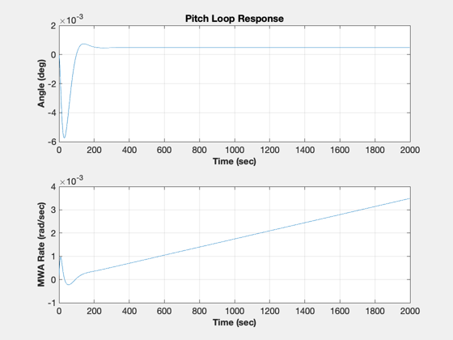

Tests the MWA pitch loop for the ComStar satellite.
If requested save controller matrix to a file (PMWA) in the ComStar folder.
------------------------------------------------------------------------- See also PtchLoop, ComStar, WriteCM -------------------------------------------------------------------------
Contents
%-------------------------------------------------------------------------- % Copyright (c) 1996 Princeton Satellite Systems, Inc. % All rights reserved. %-------------------------------------------------------------------------- % Since version 2. %--------------------------------------------------------------------------
System Parameters
%------------------ inr = ComStar('MO Inertia'); inrMWA = ComStar('MWA Inertia'); cMatrices = 'yes';
Design the pitch and tach loops
%-------------------------------- zeta = 0.7071; wN = 0.2; tSamp = 0.25; zetaPL = 0.7071; wNPL = 0.04; beta = 0.0; PitchLoop(inr(2,2),inrMWA,beta,zeta,zetaPL,wN,wNPL,1,'Z');
Write in C format
%------------------
If requested save and dump the controller matrices
%--------------------------------------------------- if( strcmp(cMatrices,'yes') ) fPath = FindDirectory('ComsatData'); fID = fopen(fullfile(fPath,'PMWA.txt'),'w'); [aM,bM,cM,dM,aP,bP,cP,dP] = PitchLoop(inr(2,2),inrMWA,beta,zeta,zetaPL,wN,wNPL,tSamp,'Delta'); WriteCM(fID,'A Matrix','fTLAMatrix',reshape(aM',1,length(aM)^2),12,20,3) WriteCM(fID,'B Matrix','fTLBMatrix',bM,12,20,3) WriteCM(fID,'C Matrix','fTLCMatrix',cM,12,20,3) WriteCM(fID,'D Matrix','fTLDMatrix',dM,12,20,3) WriteCM(fID,'A Matrix','fPLAMatrix',reshape(aP',1,length(aP)^2),12,20,3) WriteCM(fID,'B Matrix','fPLBMatrix',bP,12,20,3) WriteCM(fID,'C Matrix','fPLCMatrix',cP,12,20,3) WriteCM(fID,'D Matrix','fPLDMatrix',dP,12,20,3) disp('MWA Tach Loop Matrices') disp(aM); disp(bM); disp(cM); disp(dM); disp('MWA Pitch Loop Matrices') disp(aP); disp(bP); disp(cP); disp(dP); end %--------------------------------------
MWA Tach Loop Matrices
-0.081352
0.081352 0
-0.014776
0 0.014776
MWA Pitch Loop Matrices
0
0.25
12.115
478.3